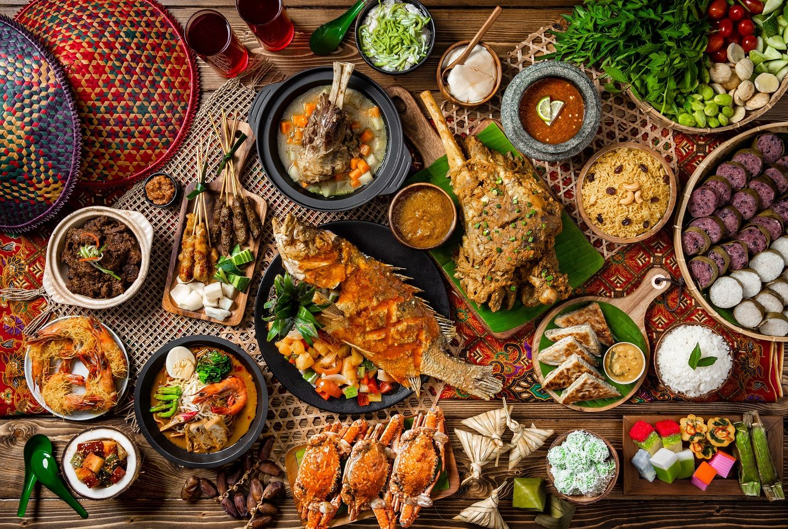

Makanan modern cepat saji bernuansa nusantara
Kami menyajikan beragam hidangan yang memenuhi selera konsumen yang ingin menikmati makanan dengan waktu yang terbatas. Sakpiring memprioritaskan kepuasan pelanggan dengan menyajikan pilihan makanan nusantara yang lezat, sambil memastikan efisiensi dan kemudahan dalam proses pemesanan dan pengambilan makanan.
Our Exclusive Products
Rendang Sapi
Terbuat dari daging sapi pilihan yang dimasak dengan bumbu rendang khas Padang yang autentik.
Rp. 20.000,-
Rendang Ayam
Menggunakan potongan ayam yang empuk, dimasak dengan bumbu rendang spesial.
Rp. 20.000,-
Cumi bumbu kuning
Hidangan istimewa dengan cumi segar yang dimasak dalam bumbu kuning yang kaya rempah. Cumi yang kenyal dipadu dengan bumbu yang gurih dan sedikit pedas
Rp. 20.000,-
Contact Info
Jl. Imam Bonjol No. 207, Pendrikan Kidul, Kec. Semarang Tengah, Kota Semarang.
+62 812 3456 7891
IG: Pudelicious_dnr